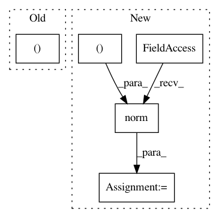

f0363f957b8e6d2680af887972387de7f00b2715,geomstats/stiefel.py,Stiefel,belongs,#Stiefel#Any#Any#,38
Before Change
and it is orthonormal.
point = gs.to_ndarray(point, to_ndim=3)
(_, point_dim) = point.shape
if point_dim != (self.n, self.p):
return False
After Change
diff = gs.matmul(
gs.transpose(point, axes=(0, 2, 1)), point) - gs.eye(p)
point_norm = gs.norm(diff, axis=(1, 2))
return gs.less_equal(point_norm, tolerance)
def project(self):
In pattern: SUPERPATTERN
Frequency: 3
Non-data size: 5
Instances
Project Name: geomstats/geomstats
Commit Name: f0363f957b8e6d2680af887972387de7f00b2715
Time: 2018-11-21
Author: 15810673+oleg-kachan@users.noreply.github.com
File Name: geomstats/stiefel.py
Class Name: Stiefel
Method Name: belongs
Project Name: geomstats/geomstats
Commit Name: 8e0ca26e5571d47425fc73bb3bb118082b742d00
Time: 2021-03-17
Author: nicolas.guigui@inria.fr
File Name: geomstats/geometry/spd_matrices.py
Class Name: SPDMatrices
Method Name: random_uniform
Project Name: geomstats/geomstats
Commit Name: 42ce0dba0e496fca8b567516499909e185b70322
Time: 2018-11-20
Author: 15810673+oleg-kachan@users.noreply.github.com
File Name: geomstats/stiefel.py
Class Name: Stiefel
Method Name: belongs